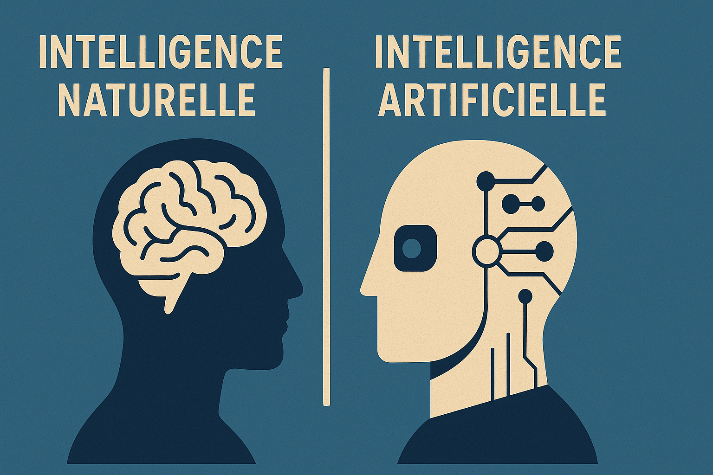

En bref : Que signifie être intelligent ? Cette question prend une tournure nouvelle à l’ère des IA génératives. Dans un article théorique, Craig S. Webster (2025) propose un cadre critique pour penser les différences fondamentales entre intelligence humaine et intelligence artificielle. En retraçant l’histoire des approches en IA, en analysant les limites actuelles des modèles comme ChatGPT, et en introduisant la notion d’« agenda psychotechnique », il offre une boussole pour mieux orienter notre rapport aux technologies dites intelligentes.

Introduction
L’intelligence est-elle un calcul ou une émergence ? Est-elle le fruit d’une logique explicite ou d’une adaptation incarnée ? Ce débat, longtemps réservé aux philosophes et aux scientifiques cognitifs, revient sur le devant de la scène avec la prolifération des modèles de langage de grande taille (LLM). Dans un article de réflexion publié dans le tout premier numéro du Journal of Psychology and AI, Craig S. Webster nous invite à dépasser les visions simplistes de l’intelligence, en soulignant les tensions fondamentales entre l’intelligence naturelle — humaine, évolutive, contextuelle — et l’intelligence artificielle — désincarnée, calculatoire, statistique. Comprendre ces tensions, selon lui, est essentiel non seulement pour évaluer les capacités réelles des systèmes IA, mais aussi pour réfléchir à leurs usages concrets en psychologie, en éducation, en justice, ou dans les pratiques sociales plus larges.
Deux formes d’intelligence : naturelle et artificielle
L’intelligence humaine est fondamentalement incarnée. Elle se construit à travers l’évolution biologique, l’expérience sensorielle, les émotions et les interactions sociales. Elle mobilise des systèmes perceptifs, moteurs, affectifs et culturels. Par contraste, l’intelligence artificielle telle qu’implémentée dans les systèmes contemporains repose sur des réseaux neuronaux entraînés par des quantités massives de données. Elle est fondée sur des régularités statistiques, sans perception, sans corps, sans conscience.
Webster illustre cette distinction en s’appuyant sur le modèle bien établi des systèmes cognitifs à double processus, théorisé notamment par les psychologues Daniel Kahneman et Keith Stanovich, utilisé en psychologie pour décrire deux modes complémentaires de fonctionnement de l’esprit humain :
Système 1 : rapide, intuitif, automatique, contextuel. Il est activé sans effort conscient et repose sur des heuristiques ou règles simples pour interpréter rapidement l’environnement. C’est le système qui nous permet, par exemple, de reconnaître une émotion sur un visage ou de compléter automatiquement une phrase familière. Il est efficace pour prendre des décisions dans des contextes familiers, mais peut aussi être sujet à des biais.
Système 2 : lent, réfléchi, délibératif. Ce système entre en jeu lorsqu’une tâche demande un raisonnement complexe, une planification, ou un jugement critique. Il permet l’apprentissage abstrait, le raisonnement logique et l’auto-réflexion. Bien qu’il soit plus précis, il est aussi plus coûteux en ressources cognitives et mobilisé plus rarement dans les prises de décision quotidiennes.
Selon Webster, les modèles actuels d’intelligence artificielle, notamment les modèles de langage comme GPT, reproduisent certains traits du Système 1 : la fluidité, l’apparente cohérence, la capacité à fournir des réponses rapides à partir de grandes bases de données. Toutefois, ils peinent à simuler les fonctions caractéristiques du Système 2. Ils ne peuvent pas raisonner sur plusieurs étapes, planifier des actions en fonction d’objectifs à long terme, ou prendre conscience de leurs propres erreurs. En d’autres termes, ils imitent le comportement humain sans accéder à la compréhension profonde ou à la réflexivité qui caractérisent la pensée humaine authentique.
Trois vagues d’IA : une évolution technique aux limites persistantes
Webster retrace l’histoire des approches en intelligence artificielle à travers trois grandes vagues, chacune fondée sur un paradigme technique et épistémologique distinct :
L’IA symbolique (1950–1980) : basée sur la logique formelle, elle repose sur la manipulation de symboles explicites et de règles. Elle vise à reproduire la pensée humaine par déduction logique. C’est l’ère des systèmes logiques, des solveurs, des systèmes d’axiomes.
Les systèmes experts (années 1980–2000) : ils utilisent des bases de connaissances alimentées par des experts humains et permettent des inférences abductives (ex. diagnostics médicaux). Leur rigidité et leur dépendance à des règles manuelles limitent leur efficacité dans des contextes dynamiques.
L’apprentissage machine (depuis les années 2010) : l’émergence des réseaux neuronaux profonds et de l’apprentissage supervisé à partir de grandes bases de données marque un tournant. Ces systèmes induisent des régularités sans explicitation des règles, et sont aujourd’hui à la base des grands modèles de langage.
Malgré leurs avancées, aucune de ces approches ne parvient à capturer les aspects incarnés, sociaux et réflexifs de la cognition humaine. L’IA actuelle reste enfermée dans une logique de corrélation sans compréhension.
Limites des modèles de langage : illusions, biais et opacité
Webster s’appuie sur des exemples concrets pour illustrer les faiblesses des LLM. Ainsi, lorsqu’on leur soumet des analogies simples — par exemple, “hamburger = pain + viande, donc salade = ?” — les modèles échouent souvent à produire une réponse cohérente. De même, leur reconnaissance de concepts quotidiens comme « strawberry » peut sembler solide, mais elle repose sur des associations statistiques, non sur une compréhension sémantique réelle et incarnée.
Ces failles révèlent plusieurs limites structurelles importantes :
- Hallucinations : les modèles peuvent générer des énoncés faux mais convaincants, créant une illusion de connaissance qui peut tromper même des utilisateurs expérimentés. Ces erreurs ne sont pas des fautes de logique mais le reflet de leur fonctionnement probabiliste.
- Biais et opacité : les données d’entraînement, souvent massives et non contrôlées, peuvent véhiculer des stéréotypes sociaux, culturels ou cognitifs. De plus, le fonctionnement interne des modèles (poids, couches, activations) est difficile à interpréter, ce qui limite la transparence et la responsabilité.
- Absence d’ancrage : contrairement à l’intelligence humaine, qui s’appuie sur des expériences vécues, des perceptions sensorielles et une compréhension corporelle du monde, les LLM ne possèdent ni mémoire personnelle, ni conscience spatiale ou temporelle, ni interaction directe avec le réel. Cela les prive de la possibilité de vérifier, de rectifier ou de contextualiser ce qu’ils produisent.
Ces limitations renforcent l’argument selon lequel les LLM ne « comprennent » pas au sens humain. Ils simulent la forme du langage et les apparences du raisonnement, mais sans les fondements cognitifs, émotionnels et perceptifs qui caractérisent la compréhension humaine. En ce sens, ils représentent une forme d’intelligence fonctionnelle, mais profondément différente de celle que nous développons dans notre rapport incarné au monde.
L’agenda psychotechnique : repenser notre rapport à l’intelligence artificielle
Face à ces constats, Webster propose un changement de perspective. Plutôt que de courir après l’utopie d’une intelligence artificielle générale (AGI), il suggère de poser une série de questions fondamentales sur le sens, les fonctions et les usages de l’IA dans nos sociétés contemporaines. Il insiste sur le besoin d’un dialogue entre disciplines pour guider l’évolution de ces technologies de manière éthique, fonctionnelle et socialement bénéfique. C’est ce qu’il appelle un agenda psychotechnique : un programme de recherche interdisciplinaire visant à articuler la psychologie, la philosophie de l’esprit, l’éthique, les sciences cognitives et l’ingénierie.
L’objectif de cet agenda est double : mieux comprendre ce que nous projetons sur l’intelligence artificielle, et mieux concevoir les technologies en fonction des besoins humains réels. Webster appelle à sortir d’une fascination technocentrée pour recentrer la réflexion sur les usages, les effets sociaux et les conditions d’appropriation.
Cet agenda comprend plusieurs axes concrets :
- Définir les types de cognition utiles à simuler, sans chercher à reproduire toute l’intelligence humaine. Il s’agit par exemple de distinguer les tâches automatisables (calculs, classifications) de celles qui nécessitent jugement, empathie ou intuition.
- Concevoir des systèmes d’IA comme outils collaboratifs, transparents, auditables et adaptables. L’IA devrait être un partenaire, pas un substitut, et renforcer la capacité d’agir des utilisateurs humains.
- Évaluer les usages socialement acceptables, en tenant compte des contextes culturels, des risques d’automatisation injuste, de surveillance intrusive ou de manipulation des opinions. Cela nécessite des mécanismes de gouvernance et de reddition de comptes.
- Favoriser des conceptions incarnées et situées de l’intelligence artificielle, c’est-à-dire des technologies qui tiennent compte du corps, de l’environnement, et des pratiques sociales dans lesquelles elles s’insèrent. Une IA utile doit être intégrée à un écosystème humain, et non abstraite de celui-ci.
Conclusion
L’article de Webster n’est pas un manifeste technophobe, mais une invitation à la lucidité. À travers un cadre théorique clair et une mise en perspective historique, il nous aide à mieux comprendre les limites actuelles des IA génératives, tout en suggérant des pistes constructives pour leur évolution. Pour les chercheuses et chercheurs en psychologie, en sciences humaines, ou en technologie, ce texte constitue une base précieuse pour penser le rôle de l’IA dans nos sociétés. Il rappelle aussi que ce qui compte n’est pas seulement ce que l’IA peut faire, mais ce que nous voulons qu’elle fasse — et pour qui.
Référence complète
Webster, C. S. (2025). Natural and artificial intelligence – the psychotechnical agenda of the 21st century. Journal of Psychology and AI, 1(1), 2491445. https://doi.org/10.1080/29974100.2025.2491445